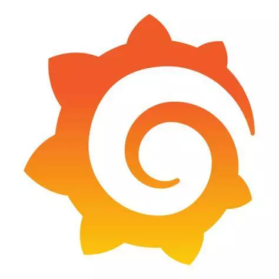
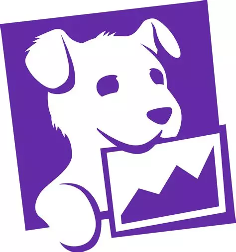
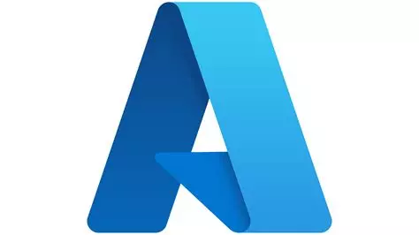
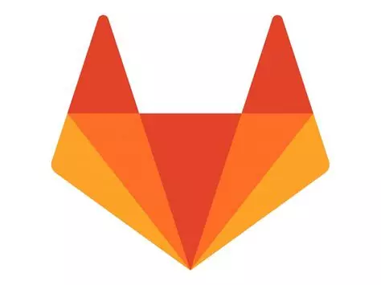
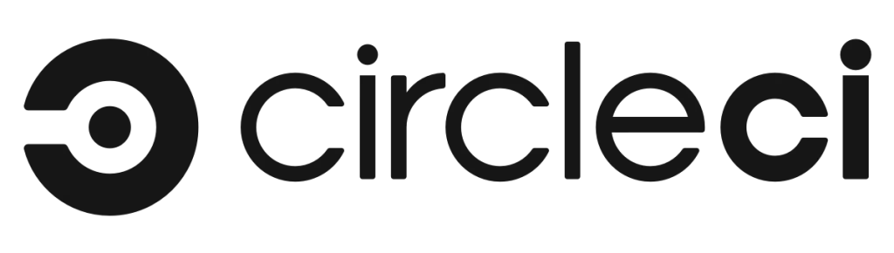
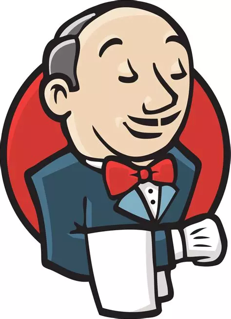
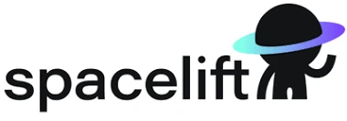

Déclenchement CI/CD
Exécutez les tests depuis GitLab CI, Azure DevOps, Jenkins ou votre orchestrateur habituel.
Greenspector Studio
Mesurez et contrôlez les ressources de votre application tout au long de son cycle de vie.
Du développement au monitoring de production, pilotez sobriété, impacts et performance en continu.
Mesure continue
Intégrez Greenspector Studio dans votre chaîne DevOps pour valider la sobriété, les impacts environnementaux et la performance avant chaque release.
La solution SaaS et ses API permettent une intégration rapide dans l'usine logicielle. Surveillez l'écoscore, l'impact CO2, le temps de parcours et le comportement sur des terminaux anciens.

Usines logicielles
Ajoutez Greenspector Studio dans votre usine logicielle grâce aux API disponibles. Lancez une mesure avant chaque release ou après chaque build.
Plus vous mesurez souvent, plus les résultats deviennent instructifs et vous permettent de garder la sobriété et les impacts de votre produit sous contrôle.

API REST
Exécutez les tests depuis GitLab CI, Azure DevOps, Jenkins ou votre orchestrateur habituel.
Alimentez vos propres tableaux de bord avec les résultats et indicateurs de mesure.
GreenOps
Mesurer fréquemment permet d'éviter une mise en production avec un défaut de sobriété ou de performance, et d'observer les tendances de long terme.


Cycle de vie
Les huit phases de la boucle DevOps peuvent intégrer une approche de sobriété des besoins et des consommations de ressources, ainsi qu'un contrôle de la qualité environnementale du produit logiciel.
Greenspector Studio est principalement utilisé pour les tests avant release. Il permet aussi de monitorer la production et de valider ponctuellement un choix technique ou fonctionnel.
Pour aller plus loin, consultez l'article Comment passer du DevOps au DevGreenOps ou regardez le webinaire.







Ils en parlent
Avec Greenspector Studio, nous mesurons l'efficacité énergétique de notre application, utilisée par 7 millions de clients chaque mois, après chaque build. Cela nous permet de réduire notre empreinte carbone, d'améliorer nos performances et de renforcer notre image de marque.
Certaines fonctionnalités peuvent varier selon le niveau d'abonnement. Consultez notre page Tarifs.
Standards
Solution reconnue pour son efficacité environnementale.
Une méthodologie alimentée par la recherche et des publications internationales.
ACV ISO 14040, SCI Green Software Foundation, RCP ADEME et standards associés.
Références
Pour allier responsabilité environnementale, satisfaction utilisateur et performance applicative.